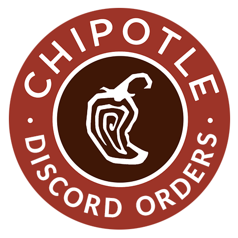

If you want to see how this page looked before and after the partnership click the 2 buttons at top of the page.
This site was the most fun I had while creating a webpage in a long time, the domain isflarepartnered.cf will no longer exist on the 30 of June 2021 but it will be forever available at this permalink
